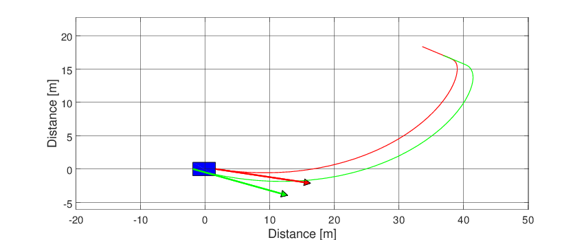
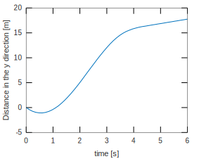
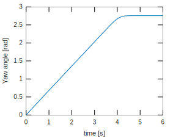
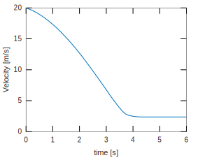
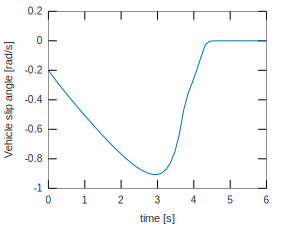
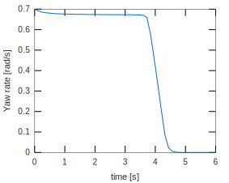
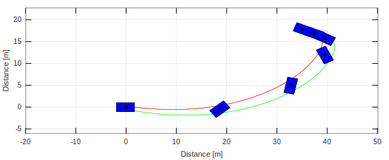

This template shows how to simulate a simple vehicle and plot the results.
Choosing tire and vehicle model.
% Choosing tire TireModel = TirePacejka(); % Choosing vehicle VehicleModel = VehicleSimpleNonlinear();
In this case, no parameter is defined. So, the default values are used. The default parameters of the vehicle and tire can be seen in VehicleSimpleNonlinear and TirePacejka, respectively.
Now, we have two variables defined. The first one is the tire model (Pacejka) and the second one is the vehicle model (Vehicle simple nonlinear).
The System is completely defined once we atribute the chosen tire model to the vehicle object.
VehicleModel.tire = TireModel;
Choosing the simulation time span
T = 6; % Total simulation time [s] resol = 50; % Resolution TSPAN = 0:T/resol:T; % Time span [s]
To define a simulation object (simulator) the arguments must be the vehicle object and the time span. The default parameters of the simulation object can be found in Simulator.
simulator = Simulator(VehicleModel, TSPAN);
Changing initial conditions of the simulation object
simulator.ALPHAT0 = -0.2; % Initial side slip angle [rad] simulator.dPSI0 = 0.7; % Initial yaw rate [rad/s]
To simulate the system we run the Simulate method of the simulation object.
simulator.Simulate();
The time history of each state is stored in separate variables. Retrieving states
XT = simulator.XT; YT = simulator.YT; PSI = simulator.PSI; VEL = simulator.VEL; ALPHAT = simulator.ALPHAT; dPSI = simulator.dPSI;
Plotting the states
f1 = figure(1); grid on ; box on plot(TSPAN,XT,'linewidth',1) xlabel('time [s]') ylabel('Distance in the x direction [m]')

f2 = figure(2); grid on ; box on plot(TSPAN,YT,'linewidth',1) xlabel('time [s]') ylabel('Distance in the y direction [m]')
f3 = figure(3); grid on ; box on plot(TSPAN,PSI,'linewidth',1) xlabel('time [s]') ylabel('Yaw angle [rad]')
f4 = figure(4); grid on ; box on plot(TSPAN,VEL,'linewidth',1) xlabel('time [s]') ylabel('Velocity [m/s]')
f5 = figure(5); grid on ; box on plot(TSPAN,ALPHAT,'linewidth',1) xlabel('time [s]') ylabel('Vehicle slip angle [rad/s]')
f6 = figure(6); grid on ; box on plot(TSPAN,dPSI,'linewidth',1) xlabel('time [s]') ylabel('Yaw rate [rad/s]')
Frame and animation
g = Graphics(simulator); g.Frame(); g.Animation();